vignettes/OSCA_SCMM.Rmd
OSCA_SCMM.RmdThis document provides an analysis pipeline for Tabula Muris data using various R packages for single-cell RNA sequencing. Each chunk is annotated with a description of its purpose.
The following libraries are loaded for data quality control, visualization, and analysis:
# Load necessary libraries for single-cell RNA-seq analysis
library(scater) # Data quality control and visualization
library(BiocParallel) # Parallel computation
library(scran) # Data preprocessing and normalization
library(igraph) # graph handling
library(ggplot2) # visualization
library(SingleCellExperiment) # Core class for single-cell data
library(SingleR) # annotation of cell types
library(celldex) # reference dataset
library(bluster) #
library(robin)
library(reshape2)For lack of time, we saved the sce in a dedicated object.
library(SingleCellMultiModal)
mae <- SingleCellMultiModal::scMultiome(dry.run=FALSE)
sce <- mae@ExperimentList$rna
sceAdditionally, we load an object with already computed PCA/TSNE/UMAP dimentionality reductions.
scev2 <- get_data_path("scescmm.rds")
sce <- readRDS(scev2)Add quality control metrics to the SingleCellExperiment object:
# Perform quality control and visualize cell metrics
sce <- addPerCellQC(sce)
hist(sce$total, breaks = 50, xlab = "Library Sizes", main = "Distribution of Library Sizes")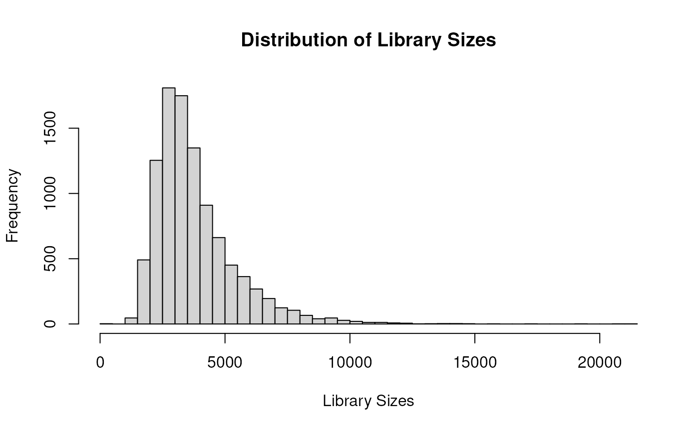
hist(sce$detected, xlab="Number of expressed genes", breaks=50, ylab="Number of cells")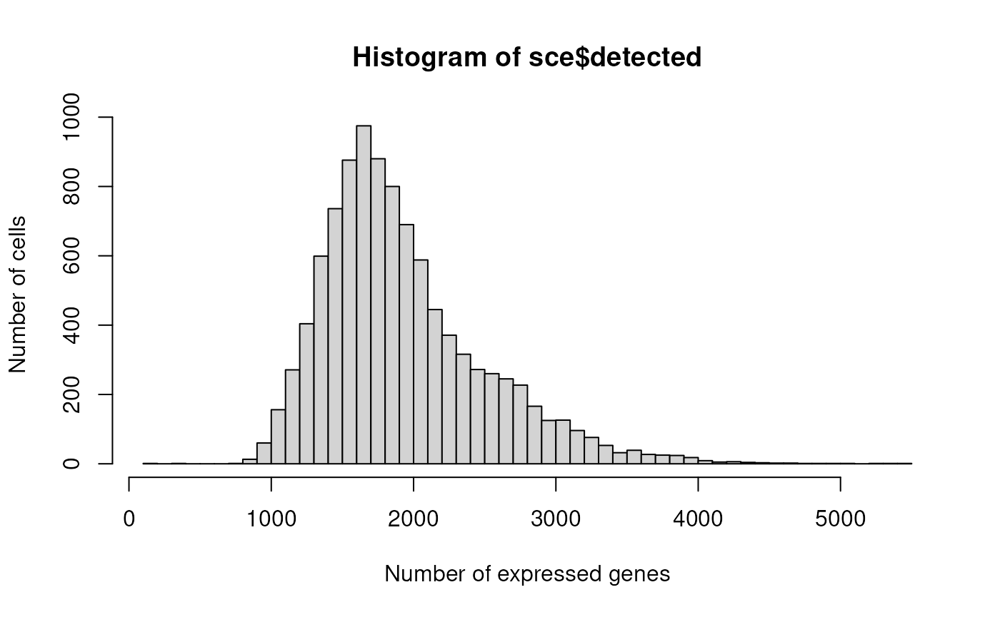
plotHighestExprs(sce, exprs_values = "counts")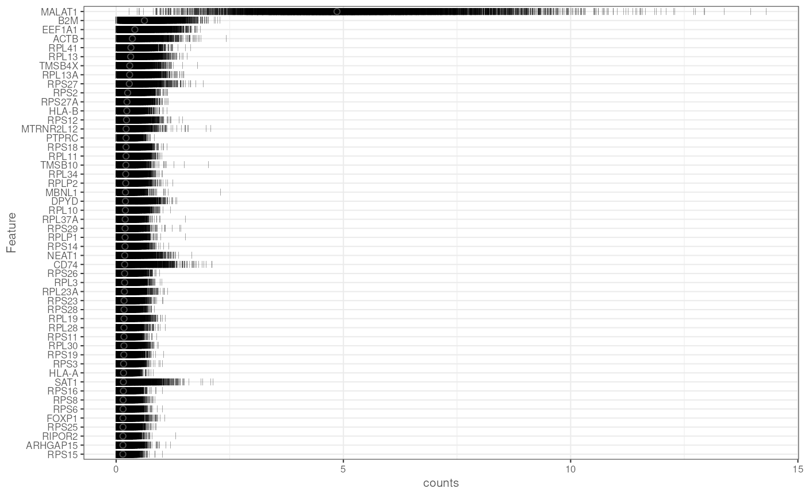
Filter genes based on their average expression levels to exclude non-informative features.
wrkrs <- 15
# Calculate average counts for each gene and filter out genes with zero average expression
rowData(sce)$ave.counts <- calculateAverage(sce, exprs_values = "counts", BPPARAM = MulticoreParam(workers = wrkrs))
to.keep <- rowData(sce)$ave.counts > 0
sce <- sce[to.keep, ]
summary(to.keep) # Summary of genes kept## Mode TRUE
## logical 29100
dim(sce) # Dimensions of the filtered SingleCellExperiment object## [1] 29100 10032Normalize the data using scran’s computeSumFactors and log-normalization for downstream analysis.
set.seed(1000)
clusters <- quickCluster(sce, BPPARAM = MulticoreParam(workers = wrkrs))
sce <- computeSumFactors(sce, cluster = clusters, BPPARAM = MulticoreParam(workers = wrkrs))
sce <- logNormCounts(sce)Model variance to identify highly variable genes for downstream analysis.
# Model variance and identify the top highly variable genes
set.seed(1001)
dec <- modelGeneVarByPoisson(sce, BPPARAM = MulticoreParam(workers = wrkrs))
top <- getTopHVGs(dec, prop = 0.1)Perform PCA, t-SNE, and UMAP for dimensionality reduction to visualize the data in lower-dimensional spaces.
For lack of time for GHA, we loaded an object with already computed PCA/TSNE/UMAP.
Here we report the run code.
# Perform PCA and reduce dimensions using t-SNE and UMAP
set.seed(1000)
sce <- denoisePCA(sce, subset.row = top, technical = dec, BPPARAM = MulticoreParam(workers = wrkrs))
ncol(reducedDim(sce)) # Number of principal components used
set.seed(1000)
sce <- runTSNE(sce, dimred = "PCA")
set.seed(1000)
sce <- runUMAP(sce, dimred = "PCA")Showing dim reds as TSNE and UMAP.
plotReducedDim(sce, dimred = "TSNE", colour_by = "celltype") # Plot TSNE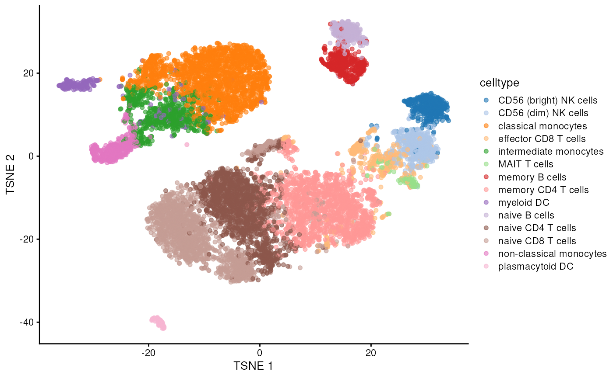
plotReducedDim(sce, dimred = "UMAP", colour_by = "celltype") # Plot UMAP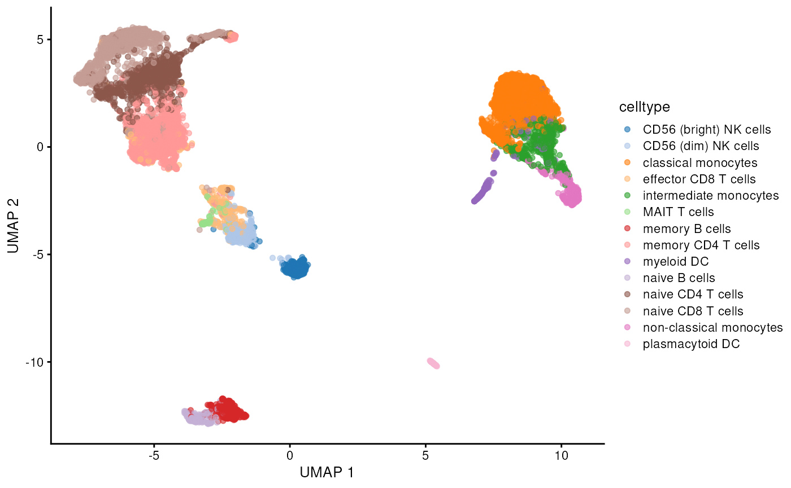
Construct a shared nearest neighbor (SNN) graph based on PCA-reduced dimensions.
# Build a shared nearest neighbor (SNN) graph
graph <- buildSNNGraph(sce, k = 25, use.dimred = 'PCA') # k=25 neighborsEvaluate different clustering methods using robin
# Simplify the graph and evaluate clustering methods
graph <- igraph::simplify(graph) # Simplify the graph by removing duplicate edgesWe apply the compare procedure to see which is the algorithm that better fits our network.
graph <- prepGraph(graph, file.format="igraph")
graph <- remove.edge.attribute(graph, "weight")
#Infomap
comp_I <- robinCompare(graph=graph, method1="louvain",
method2="infomap")
#Walktrap
comp_W <- robinCompare(graph=graph, method1="louvain",
method2="walktrap")
#LabelProp
comp_La <- robinCompare(graph=graph, method1="louvain",
method2="labelProp") # use leiden
#Fastgreedy
comp_F <- robinCompare(graph=graph, method1="louvain",
method2="fastGreedy")
comp_ll <- robinCompare(graph=graph, method1="louvain",
method2="leiden")
path <- system.file("extdata", package = "scrobinv2")
comp_I <- readRDS(file.path(path, "compI.rds"))
comp_W <- readRDS(file.path(path, "compW.rds"))
comp_La <- readRDS(file.path(path, "compLa.rds"))
comp_F <- readRDS(file.path(path, "compF.rds"))
comp_ll <- readRDS(file.path(path, "compll.rds"))
p <- robin::plotMultiCompare(comp_I,comp_W,comp_F,comp_La, comp_ll, title="Robin Compare")
p + labs(color = "Model")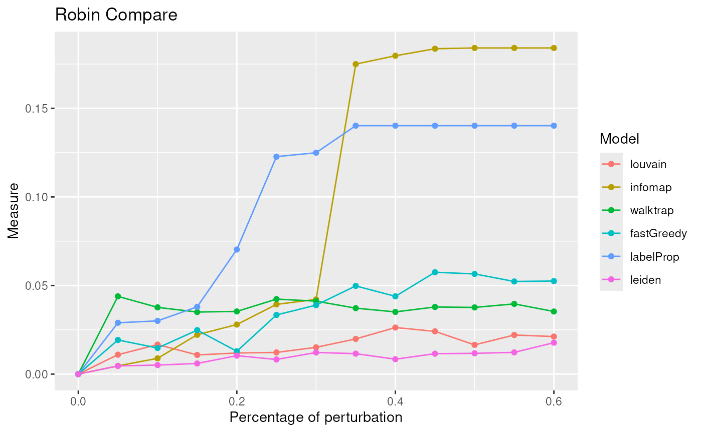
The lowest curve is the most stable algorithm. Leiden and Louvain are the best algorithms in our example.
Due to the fact that Leiden is one of the best algorithm for our network we apply the robust procedure with the Leiden algorithm to see if the communities detected are statistically significant.
graphRandom <- random(graph=graph)
proc <- robinRobust(graph=graph, graphRandom=graphRandom, method="leiden")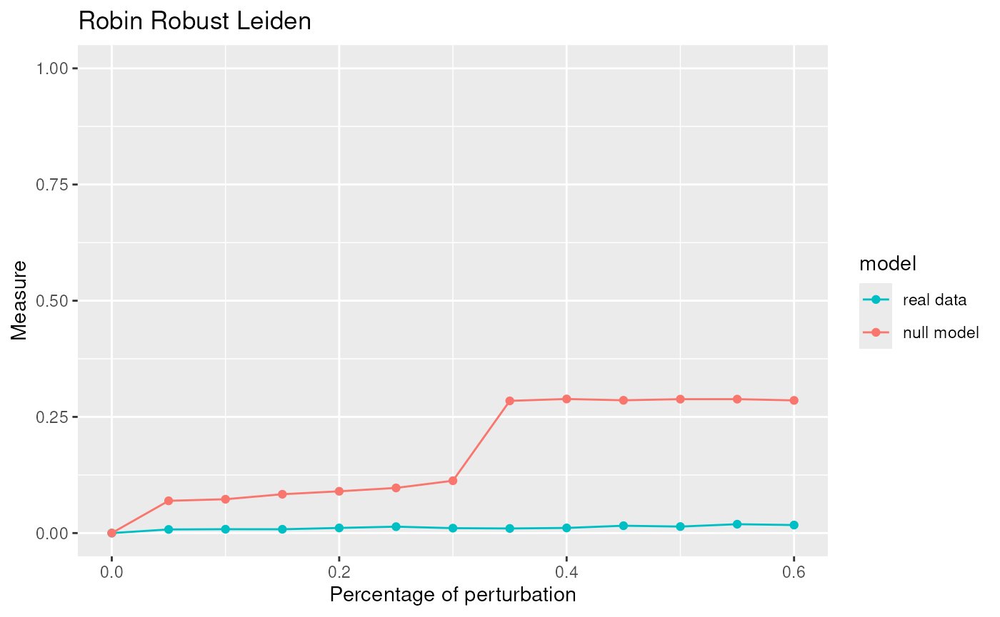
robinFDATest(proc)## [1] "First step: basis expansion"
## Swapping 'y' and 'argvals', because 'y' is simpler,
## and 'argvals' should be; now dim(argvals) = 13 ; dim(y) = 13 x 20
## [1] "Second step: joint univariate tests"
## [1] "Third step: interval-wise combination and correction"
## [1] "creating the p-value matrix: end of row 2 out of 9"
## [1] "creating the p-value matrix: end of row 3 out of 9"
## [1] "creating the p-value matrix: end of row 4 out of 9"
## [1] "creating the p-value matrix: end of row 5 out of 9"
## [1] "creating the p-value matrix: end of row 6 out of 9"
## [1] "creating the p-value matrix: end of row 7 out of 9"
## [1] "creating the p-value matrix: end of row 8 out of 9"
## [1] "creating the p-value matrix: end of row 9 out of 9"
## [1] "Interval Testing Procedure completed"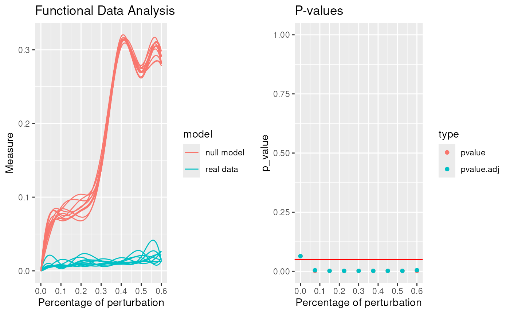
## TableGrob (1 x 2) "arrange": 2 grobs
## z cells name grob
## 1 1 (1-1,1-1) arrange gtable[layout]
## 2 2 (1-1,2-2) arrange gtable[layout]## $adj.pvalue
## [1] 0.0640 0.0045 0.0018 0.0018 0.0018 0.0018 0.0018 0.0018 0.0048
##
## $pvalues
## [1] 0.0640 0.0018 0.0018 0.0018 0.0018 0.0018 0.0018 0.0018 0.0018
robinGPTest(proc)## Profile 1
## Profile 2## [1] 105.0276The communities given by Leiden are statistically significant.
Here we show a table of the number of cells per each community.
mc <- membershipCommunities(graph=graph, method="leiden")
table(mc)## mc
## 1 2 3 4 5 6 7 8 9 10 11
## 1315 1573 375 2694 150 1067 1227 229 581 715 106To have a complete overview of the obtained results, we now compare the obtained clusters with annotated celltypes by singleR.
To do this kind of analysis, we used as a refernce the
MonacoImmuneData dataset provided by the celldex
bioconductor package.
monacosce <- MonacoImmuneData()
sr <- SingleR(test=sce, ref=monacosce, labels=monacosce$label.fine)
sce$singleR <- sr$labelsWe now store the communities into the sce object and use them in combination with the reference to annotate them.
set.seed(999)
sce$leiden <- as.factor(mc)
src <- SingleR(test=sce, ref=monacosce, labels=monacosce$label.fine, clusters=sce$leiden)
names(src$labels) <- names(table(sce$leiden))
sce$singleRLeiden <- NA
for(i in names(src$labels))
{
sce$singleRLeiden[which(sce$leiden == i)] <- src$labels[i]
}Here we compare the results obtained between the original cell types and the annotated results using the transformed VI metric.
## Comparison between ground truth and SingleR labels alone
igraph::compare(sce$celltype, sce$singleR, method="vi")/log2(dim(sce)[2]) ## [1] 0.1057567
## Comparison between ground truth and Clusters computed with Leiden
igraph::compare(sce$celltype, sce$leiden, method="vi")/log2(dim(sce)[2])## [1] 0.08023267
## Comparison between ground truth and SingleR with labels + clusters
igraph::compare(sce$celltype, sce$singleRLeiden, method="vi")/log2(dim(sce)[2])## [1] 0.07341289Finally, to better investigate the results, we plot a heatmap where we have the original cell types on the y axis and the different annotations on the x axis.
# source(system.file("scripts", "functions.R", package = "scrobinv2"))
source(get_data_path("functions.R"))
df <- as.data.frame(colData(sce))
clusterDotPlot(df, "celltype", "leiden")## [1] "ARI = 0.64"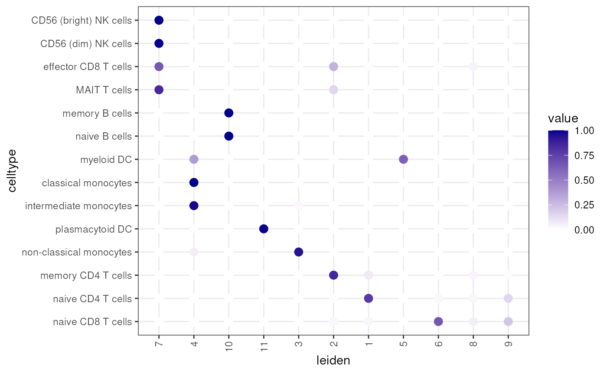
clusterDotPlot(df, "celltype", "singleR")## [1] "ARI = 0.64"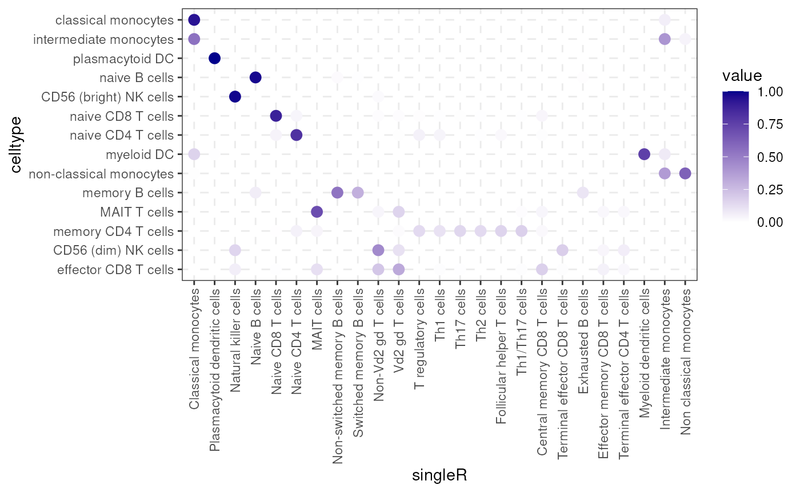
clusterDotPlot(df, "celltype", "singleRLeiden")## [1] "ARI = 0.66"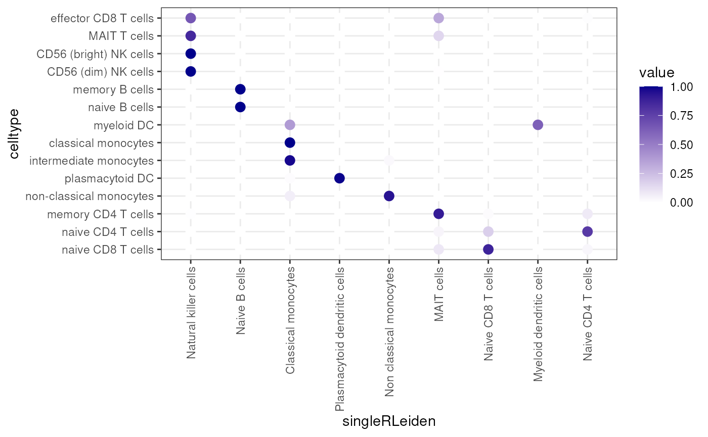
Once we found the best clustering algorithm, we can use the found communities for identifying marker genes, to subsequently find cell types.
markers <- findMarkers(sce, groups=sce$leiden)
marker_genes <- unique(unlist(lapply(markers, function(m) head(rownames(m), 5))))
plotHeatmap(
sce,
features = marker_genes,
columns_by = "louvain",
exprs_values = "logcounts",
scale = TRUE,
centre = TRUE,
zlim = c(-2, 2)
)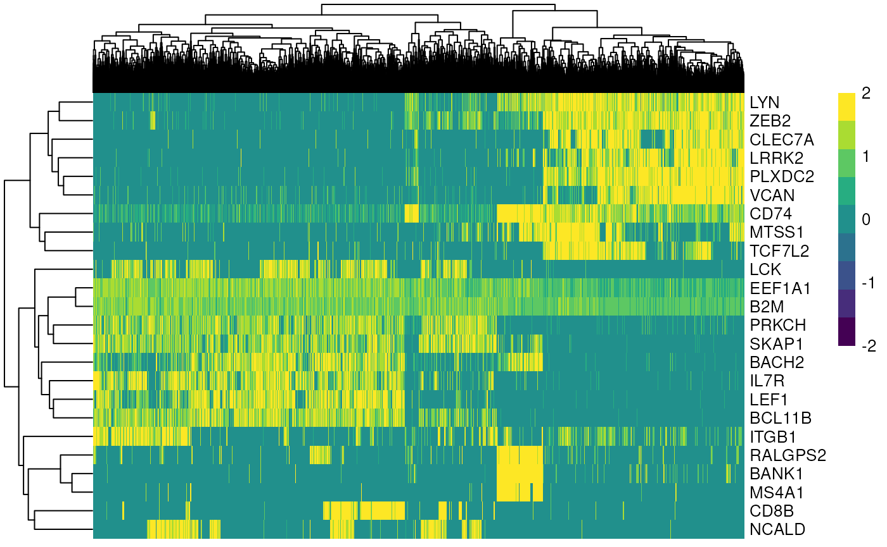
## R version 4.4.2 (2024-10-31)
## Platform: x86_64-pc-linux-gnu
## Running under: Ubuntu 24.04.1 LTS
##
## Matrix products: default
## BLAS: /usr/lib/x86_64-linux-gnu/openblas-pthread/libblas.so.3
## LAPACK: /usr/lib/x86_64-linux-gnu/openblas-pthread/libopenblasp-r0.3.26.so; LAPACK version 3.12.0
##
## locale:
## [1] LC_CTYPE=en_US.UTF-8 LC_NUMERIC=C
## [3] LC_TIME=en_US.UTF-8 LC_COLLATE=en_US.UTF-8
## [5] LC_MONETARY=en_US.UTF-8 LC_MESSAGES=en_US.UTF-8
## [7] LC_PAPER=en_US.UTF-8 LC_NAME=C
## [9] LC_ADDRESS=C LC_TELEPHONE=C
## [11] LC_MEASUREMENT=en_US.UTF-8 LC_IDENTIFICATION=C
##
## time zone: Etc/UTC
## tzcode source: system (glibc)
##
## attached base packages:
## [1] stats4 stats graphics grDevices utils datasets methods
## [8] base
##
## other attached packages:
## [1] reshape2_1.4.4 robin_2.0.0
## [3] bluster_1.16.0 celldex_1.16.0
## [5] SingleR_2.8.0 igraph_2.1.4
## [7] scran_1.34.0 BiocParallel_1.40.2
## [9] scater_1.34.1 ggplot2_3.5.2
## [11] scuttle_1.16.0 SingleCellExperiment_1.28.1
## [13] SummarizedExperiment_1.36.0 Biobase_2.66.0
## [15] GenomicRanges_1.58.0 GenomeInfoDb_1.42.3
## [17] IRanges_2.40.1 S4Vectors_0.44.0
## [19] BiocGenerics_0.52.0 MatrixGenerics_1.18.1
## [21] matrixStats_1.5.0
##
## loaded via a namespace (and not attached):
## [1] splines_4.4.2 bitops_1.0-9
## [3] filelock_1.0.3 cellranger_1.1.0
## [5] tibble_3.2.1 deSolve_1.40
## [7] lifecycle_1.0.4 httr2_1.1.2
## [9] edgeR_4.4.2 lattice_0.22-7
## [11] MASS_7.3-65 alabaster.base_1.6.1
## [13] magrittr_2.0.3 limma_3.62.2
## [15] sass_0.4.10 rmarkdown_2.29
## [17] jquerylib_0.1.4 yaml_2.3.10
## [19] metapod_1.14.0 askpass_1.2.1
## [21] gld_2.6.7 cowplot_1.1.3
## [23] DBI_1.2.3 RColorBrewer_1.1-3
## [25] abind_1.4-8 zlibbioc_1.52.0
## [27] expm_1.0-0 RCurl_1.98-1.17
## [29] pracma_2.4.4 rappdirs_0.3.3
## [31] GenomeInfoDbData_1.2.13 data.tree_1.1.0
## [33] ggrepel_0.9.6 irlba_2.3.5.1
## [35] pheatmap_1.0.13 dqrng_0.4.1
## [37] pkgdown_2.1.3 DelayedMatrixStats_1.28.1
## [39] codetools_0.2-20 DelayedArray_0.32.0
## [41] tidyselect_1.2.1 UCSC.utils_1.2.0
## [43] farver_2.1.2 ScaledMatrix_1.14.0
## [45] viridis_0.6.5 BiocFileCache_2.14.0
## [47] jsonlite_2.0.0 BiocNeighbors_2.0.1
## [49] e1071_1.7-16 ks_1.15.1
## [51] systemfonts_1.2.3 tools_4.4.2
## [53] ragg_1.4.0 DescTools_0.99.60
## [55] Rcpp_1.0.14 glue_1.8.0
## [57] gridExtra_2.3 SparseArray_1.6.2
## [59] xfun_0.52 dplyr_1.1.4
## [61] HDF5Array_1.34.0 gypsum_1.2.0
## [63] withr_3.0.2 formatR_1.14
## [65] BiocManager_1.30.26 fastmap_1.2.0
## [67] boot_1.3-31 rhdf5filters_1.18.1
## [69] digest_0.6.37 rsvd_1.0.5
## [71] R6_2.6.1 qpdf_1.3.5
## [73] textshaping_1.0.1 colorspace_2.1-1
## [75] networkD3_0.4.1 RSQLite_2.4.0
## [77] generics_0.1.4 data.table_1.17.4
## [79] class_7.3-23 httr_1.4.7
## [81] htmlwidgets_1.6.4 S4Arrays_1.6.0
## [83] pkgconfig_2.0.3 Exact_3.3
## [85] gtable_0.3.6 blob_1.2.4
## [87] XVector_0.46.0 pcaPP_2.0-5
## [89] htmltools_0.5.8.1 scales_1.4.0
## [91] alabaster.matrix_1.6.1 perturbR_0.1.3
## [93] lmom_3.2 png_0.1-8
## [95] knitr_1.50 rstudioapi_0.17.1
## [97] tzdb_0.5.0 curl_6.2.3
## [99] proxy_0.4-27 cachem_1.1.0
## [101] rhdf5_2.50.2 stringr_1.5.1
## [103] rootSolve_1.8.2.4 BiocVersion_3.20.0
## [105] KernSmooth_2.23-26 parallel_4.4.2
## [107] fda_6.3.0 vipor_0.4.7
## [109] AnnotationDbi_1.68.0 desc_1.4.3
## [111] pillar_1.10.2 grid_4.4.2
## [113] alabaster.schemas_1.6.0 vctrs_0.6.5
## [115] BiocSingular_1.22.0 dbplyr_2.5.0
## [117] beachmat_2.22.0 cluster_2.1.8.1
## [119] beeswarm_0.4.0 evaluate_1.0.3
## [121] readr_2.1.5 mvtnorm_1.3-3
## [123] cli_3.6.5 locfit_1.5-9.12
## [125] compiler_4.4.2 rlang_1.1.6
## [127] crayon_1.5.3 fdatest_2.1.1
## [129] labeling_0.4.3 mclust_6.1.1
## [131] fds_1.8 plyr_1.8.9
## [133] forcats_1.0.0 fs_1.6.6
## [135] ggbeeswarm_0.7.2 stringi_1.8.7
## [137] rainbow_3.8 viridisLite_0.4.2
## [139] alabaster.se_1.6.0 hdrcde_3.4
## [141] Biostrings_2.74.1 Matrix_1.7-3
## [143] ExperimentHub_2.14.0 hms_1.1.3
## [145] sparseMatrixStats_1.18.0 bit64_4.6.0-1
## [147] Rhdf5lib_1.28.0 KEGGREST_1.46.0
## [149] statmod_1.5.0 haven_2.5.5
## [151] alabaster.ranges_1.6.0 AnnotationHub_3.14.0
## [153] memoise_2.0.1 bslib_0.9.0
## [155] bit_4.6.0 readxl_1.4.5